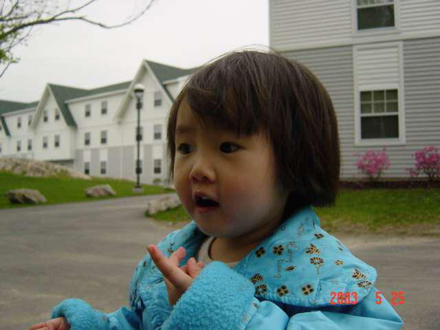
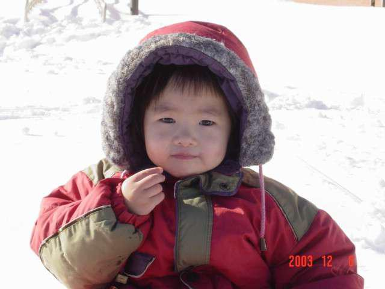

Background
This is me! I was born on December 20th, 2000, in a snowy town in Japan called Kanazawa. Since this picture was taken on August 25th, 2003, that means that I was three and a half years old in this picture! I'm not quite sure what I was looking at here, but this is one of the few pictures that I have of myself, at that age, in a dress. I absolutely detested dresses and "girly" things when I was little, so I'm sure my parents had to bribe me somehow to wrangle me into that outfit!
Case in point! This picture of me is from a little earlier that same summer, but the outfit is a lot more like something that I would have typically worn back then. It's not super "tomboy-ish", but I was crazy about the color blue, so I don't think I minded. Again, I'm not sure what I'm looking at...baby me seems to have been quite a headache in terms of posing for photos (in the sense that I didn't pose at all).
Last picture of me as a baby! I'm about to turn four in this picture, and we were out sledding that day since had just snowed a bunch the night before. I couldn't find it, but there is a picture floating around somewhere, of me that day carrying a family-sized bag of Bugles half the size of me - so that's what I'm eating (and, I suspect, why I look so content). And I finally learned how to look into the camera!
This is a fairly large jump, but I had a lot of trouble finding pictures of me in elementary school, so! I stopped taking pictures of myself starting in middle school; I didn't really go out too often, and when I did I usually preferred to put my phone away and just enjoy the time, or else I would only take pictures of other people, or scenery. Part of it was totally because I didn't like how awkward I looked! I had my braces all the way until the end of my Sophomore year of high school, which really blows. I did have my moments though. Here's a picture of me laughing along as a friend of mine told a joke! (I did crop her out though, sorry Vicka.)
Another pretty big time skip, I know, but here's me at prom! I bought my dress for a hundred dollars at my local Macy's, the weekend before prom. Bad planning on my part, but everything worked out and I really liked the dress that I ended up getting! Technically it is a two-piece dress, which might not technically qualify as a dress since it's more of a top-and-skirt combo, but potato po-tah-to. My favorite part of it was that it had pockets! The most annoying thing about wearing a dress usually is that, even if you're not really carrying anything in your hands, you still have nowhere to put your phone - so this was a life saver. My heels really did end up hurting my feet though, but I guess that's my fault since I did buy them a half-size too large.
Finally, here's me in New York City! I was super lucky, since NYU was my top choice of University. I was super introverted and kept to myself a lot during high school, and to some extent I'm still quite similar here, but I'm grateful to have found a group of friends that like me for who I am. In this picture I'm with my friend Austin; I had just gotten my new sweater, which I'm wearing, and I was feeling really great that day. I hope we get to go out like that again soon!
And that's me! A short timeline of me from age 3-19. I'd have liked to share even more pictures, but as it is I already had a hard enough time limiting the pictures I wanted to share! Maybe I'll come back here and add more to this at some point, and make things look prettier.
For additional information, or cute baby pictures, please contact Charlie here.